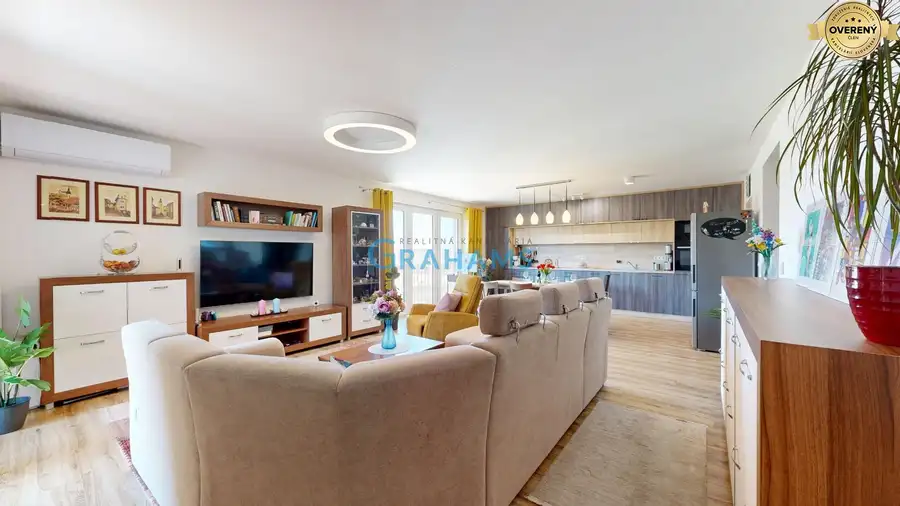
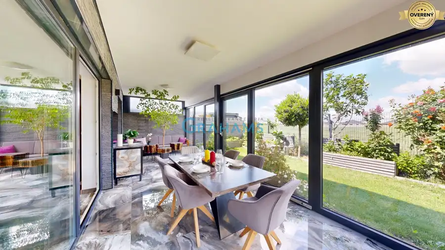
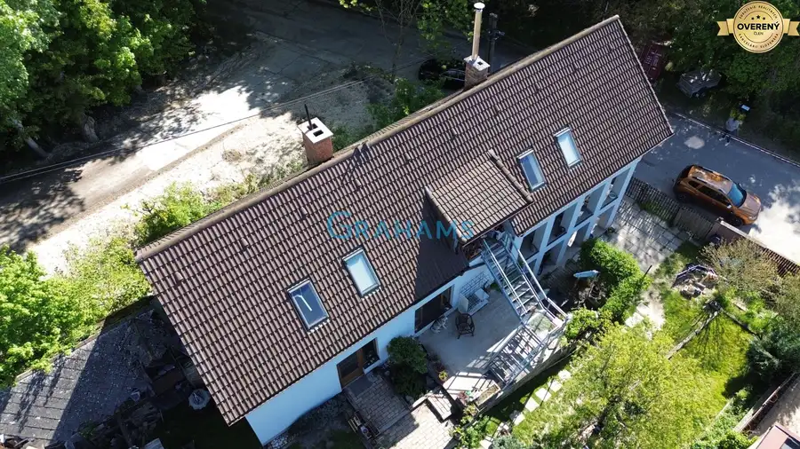
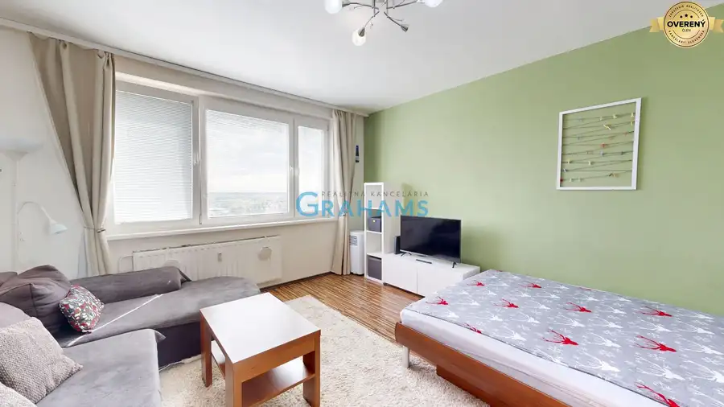

Aktuálna ponuka
Nehnuteľnosti, ktoré ponúkam
8 nehnuteľností na predaj a prenájom. Vyberte typ, alebo napíšte lokalitu.
8 z 8 ponúk
 Byt10
279 990 €Moderný 3-izbový byt po kompletnej rekonštrukcii, Budatínska
Petržalka, Bratislava
3-izbový70.73 m²5. podlažie
Realitná kancelária Grahams Vám v exkluzívnom zastúpení klienta ponúka na predaj štýlový 3-izbový byt po nadštandardnej kompletnej rekonštrukcii,…
Byt10
279 990 €Moderný 3-izbový byt po kompletnej rekonštrukcii, Budatínska
Petržalka, Bratislava
3-izbový70.73 m²5. podlažie
Realitná kancelária Grahams Vám v exkluzívnom zastúpení klienta ponúka na predaj štýlový 3-izbový byt po nadštandardnej kompletnej rekonštrukcii,…
 Rodinné domy10
339 990 €Zariadený 4-izbový dom Rovinka – Okružná, pozemok, parkovanie
Rovinka
4-izbový138 m²
Realitná kancelária Grahams Vám v exkluzívnom zastúpení klienta ponúka na predaj 4-izbový rodinný dom, skolaudovaný v roku 2011, nachádzajúci sa na…
Rodinné domy10
339 990 €Zariadený 4-izbový dom Rovinka – Okružná, pozemok, parkovanie
Rovinka
4-izbový138 m²
Realitná kancelária Grahams Vám v exkluzívnom zastúpení klienta ponúka na predaj 4-izbový rodinný dom, skolaudovaný v roku 2011, nachádzajúci sa na…
 Pozemok7
269 990 €Stará Dúbravka, stavebný pozemok 459 m², všetky siete, UPI
Dúbravka, Bratislava
459 m²
Realitná spoločnosť GRAHAMS vám v exkluzívnom zastúpení ponúka na predaj atraktívny stavebný pozemok v srdci starej Dúbravky na ulici K Horárskej…
Pozemok7
269 990 €Stará Dúbravka, stavebný pozemok 459 m², všetky siete, UPI
Dúbravka, Bratislava
459 m²
Realitná spoločnosť GRAHAMS vám v exkluzívnom zastúpení ponúka na predaj atraktívny stavebný pozemok v srdci starej Dúbravky na ulici K Horárskej…

Byt10 539 990 €Jedinečný 4-i penthouse s panoramatickými výhľadmi, Bory, 2x Parking Devínska Nová Ves, Bratislava 4-izbový128.64 m² V exkluzívnom zastúpení vám realitná spoločnosť Grahams ponúka na predaj výnimočný 4-izbový strešný penthouse v rezidenčnom projekte Bory. Táto…
Rodinné domy10 359 990 €Moderný a zariadený 4-izbový bungalov, Hviezdoslavov, slepá ulica Hviezdoslavov 4-izbový116 m² Realitná kancelária Grahams Vám v exkluzívnom zastúpení klienta ponúka na predaj dizajnový 4-izbový bungalov, skolaudovaný v roku 2020, nachádzajúci… Pozemok3
120 547 €Rekreačný pozemok 1013 m2, záhradna chatka, Záhorska Bystrica
Záhorská Bystrica, Bratislava
1013 m²
Realitná kancelária Grahams Vám v exkluzívnom zastúpení klienta ponúka na predaj rekreačný pozemok so záhradným domom v mestskej časti Bratislava –…
Pozemok3
120 547 €Rekreačný pozemok 1013 m2, záhradna chatka, Záhorska Bystrica
Záhorská Bystrica, Bratislava
1013 m²
Realitná kancelária Grahams Vám v exkluzívnom zastúpení klienta ponúka na predaj rekreačný pozemok so záhradným domom v mestskej časti Bratislava –…

Rodinné domy10 799 990 €Rodinný dom 240 m², 3 bytové jednotky, veľký pozemok, Lamač Lamač, Bratislava 6-izbový240 m² Realitná spoločnosť Grahams Vám v exkluzívnom zastúpení ponúka na predaj jedinečnú nehnuteľnosť nachádzajúcu sa v pokojnom prostredí obklopenom…
Byt8 Cena dohodouSvetlý 1-izbový byt, zariadený, pekný vyhľad – Znievska ulica Petržalka 1-izbový34.86 m²10. podlažie Realitná kancelária Grahams Vám v exkluzívnom zastúpení klienta ponúka na prenájom príjemný 1-izbový byt s pekným výhľadom na jazero Draždiak,…Tomuto výberu zatiaľ nezodpovedá žiadna ponuka. Napíšte mi, čo hľadáte.